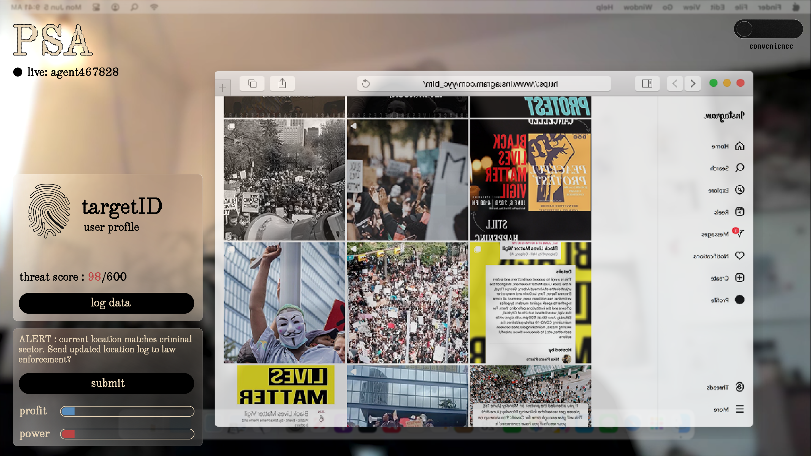
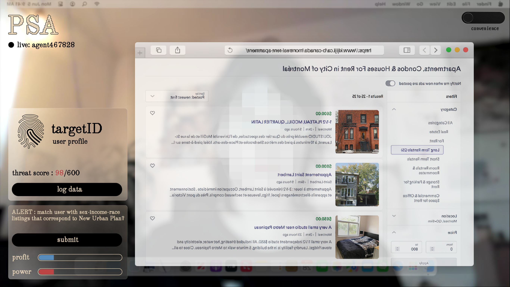
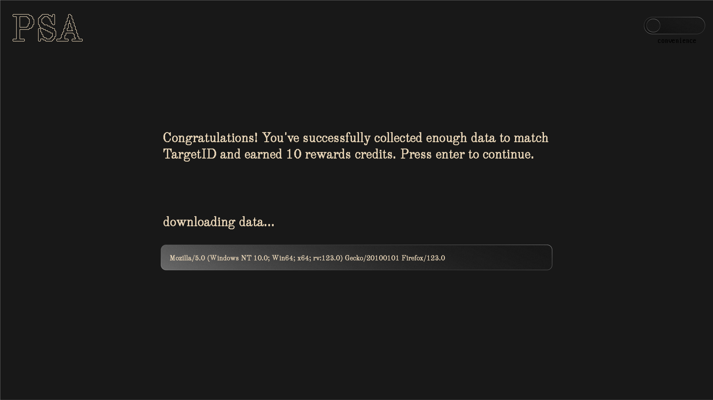

will show animated logo
scroll-activated typewriter text with GSAP will appear and disappear as user scrolls
start button takes to login page
user can type in any name, it will start with agent-
username dynamically updates in top left corner, black dot will be blinking
background will be a video with ambient sound
hovering over logo will animate it, clicking returns to start

after few seconds delay, first window pops up, from here all is click activated
left panels show button style on hover

collect data by clicking 'log data', it will update the fingerprint + maybe the threat score
gain $/power buy clicking submit, collecting rewards credits
popup browser might also be a video so you can see + hear typing
after filling in the full fingerprint, and all $/power, user will go to last screen.

the text under 'downloading data' will be changing rapidly, scrolling through all the personal information logged that helped match the unique consumer profile to the real-life identity
here you can spend your rewards credits on awesome prizes that benefit BIGDICKS
clicking the convenience/autonomy toggle opens the about/resources overlay
about is brief project bio + links to essay and sources
resources links to ways to inform better digital habits
mobile would use flexbox to change position of divs to bottom instead of left
browser screenshots replaced by mobile screenshots (maybe gifs for movement?)
background video will be replaced by still photo or gif